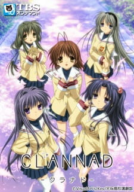
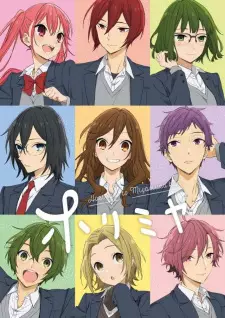
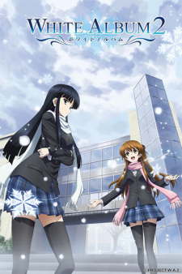
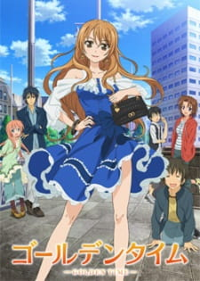
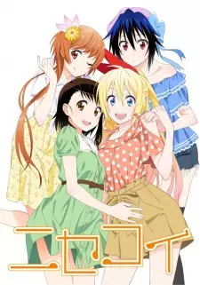

Bunny Girl Senpai

A mysterious phenomenon causes anomalies in Sakuta Azusagawa’s life. He meets a girl dressed as a bunny, only he can see. Together, they explore the mysteries surrounding Adolescence Syndrome and teenage hardships.
Clannad
Tomoya Okazaki meets Nagisa Furukawa, and his life takes a new direction. They help each other face past pains, find happiness, and discover the meaning of family.
Clannad: After Story

The continuation of Tomoya and Nagisa’s story, diving into adulthood’s challenges and the beauty and pain of family life, love, and sacrifice.
Kaguya-sama: Love is War

The student council president and vice president, Kaguya Shinomiya and Miyuki Shirogane, are secretly in love with each other but too proud to confess. A war of wits ensues as they try to make the other confess first.
Horimiya
A story about the unlikely friendship and romance between the popular Hori and the quiet, reserved Miyamura. Together, they discover each other’s hidden sides and grow closer.
>Your Lie in April
A pianist, Kousei Arima, who has lost the ability to hear the sound of the piano, meets a lively violinist, and the two develop a bond that changes his life forever.
Domestic Girlfriend

Natsuo Fujii starts an affair with his teacher, Hina, and later discovers that his father has remarried, making Hina his step-sister. Confusion and love triangles ensue.
Kuzu no Honkai
Hanabi Yasuraoka and Mugi Awaya are deeply in love with their respective crushes, yet they settle for a complicated relationship with each other as they grapple with the idea of what love truly is.
White Album 2
A love story about a boy, Touya, who is caught between two girls, Setsuna and Kazusa, as they pursue their dreams of music and love.
Golden Time
A college romance where Banri Tada, suffering from amnesia, falls in love with Koko Kaga, a spirited girl. As their relationship develops, they face pasts that threaten their future.
Nagi no Asukara

A beautiful coming-of-age story about four friends from the sea who struggle with their relationships as they are pulled between the sea and the land.
Your Name

Two teenagers, Taki and Mitsuha, swap bodies and embark on a journey to find each other while uncovering a mysterious connection between them across time and space.
Nisekoi
Raku Ichijou, the heir of a Yakuza family, is forced to pretend to date Chitoge Kirisaki, a girl from a rival family, as they search for a promise key from their childhood.